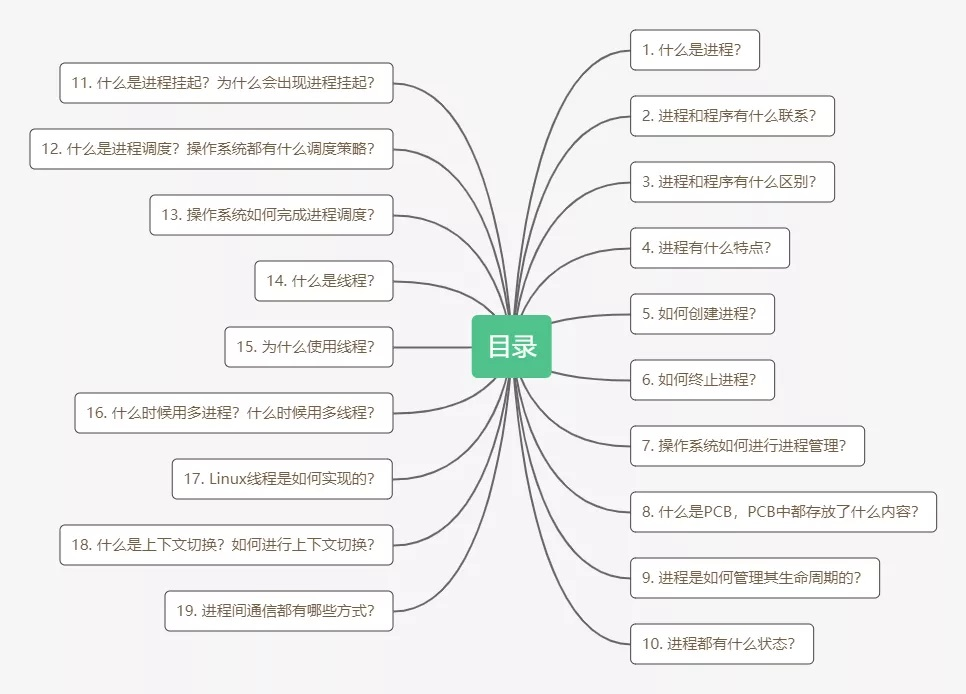
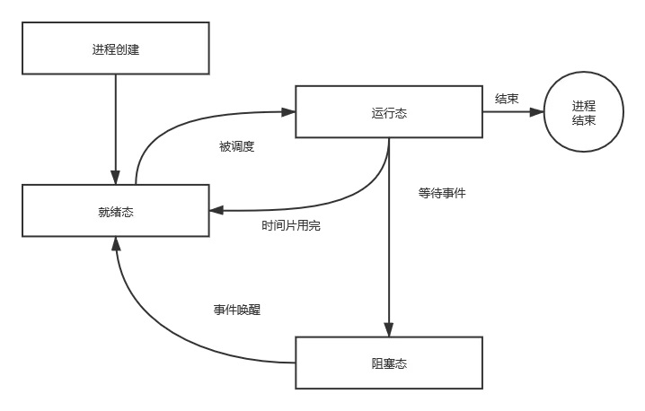
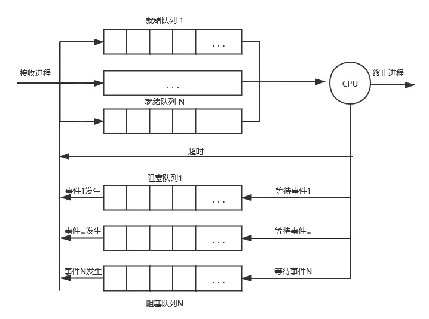
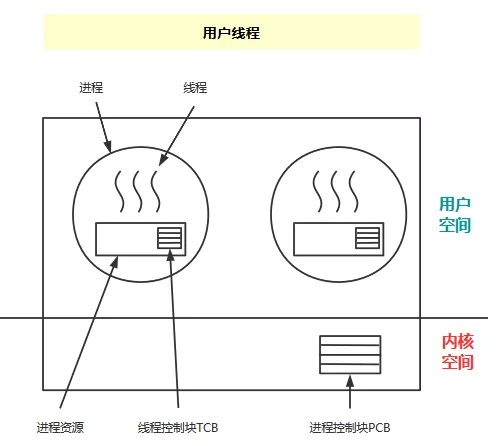
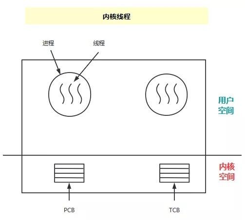
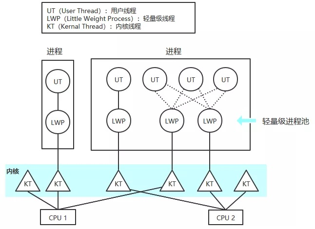
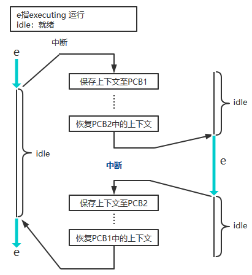
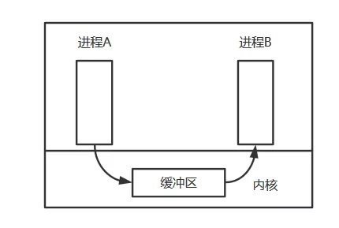
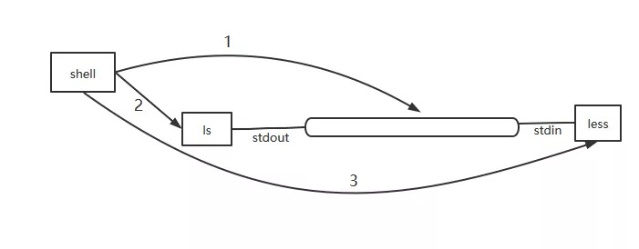

本文转载自这篇文章

什么是进程？
标准定义：进程是一个具有一定独立功能的程序在一个数据集合上依次动态执行的过程。进程是一个正在执行程序的实例，包括程序计数器、寄存器和程序变量的当前值。
简单来说进程就是一个程序的执行流程，内部保存程序运行所需的资源
在操作系统中可以有多个进程在运行，可对于CPU来说，同一时刻，一个CPU只能运行一个进程，但在某一时间段内，CPU将这一时间段拆分成更短的时间片，CPU不停地在各个进程间游走，这就给人一种并行的错觉，像CPU可以同时运行多个进程一样，这就是伪并行。
进程和程序有什么联系？
一个进程是某种类型的一个活动，它有程序、输入、输出以及状态。单个处理器可以被若干进程共享，它使用某种调度算法决定何时停止一个进程的工作，并转而为另一个进程提供服务。
- 程序是产生进程的基础
- 程序的每次运行产生不同的进程
- 进程是程序功能的体现
- 通过多次执行，一个程序可对应多个进程；通过调用关系，一个进程可包括多个程序
进程和程序有什么区别？
进程是动态的，程序是静态的：程序是有序代码的集合，进程是程序的执行。
进程是暂时的，程序是永久的：进程是一个状态变化的过程，程序可长久保存。
进程和程序的组成不同：进程的组成包括程序、数据和进程控制块（进程状态信息）。
进程有什么特点？
动态性：可动态地创建和结束进程
并发性：可以被独立的调度并占用处理机并发运行
独立性：不同进程的工作不相互影响
制约性：因访问共享资源或进程间同步而产生制约
进程如何创建？
有什么事件会触发进程的创建呢？
系统初始化：当启动操作系统时，通常会创建很多进程，有些是同用户交互并替他们完成工作的前台进程，其它的都是后台进程，后台进程和特定用户没有关系，但也提供某些专门的功能，例如接收邮件等，这种功能的进程也称为守护进程。计划任务是个典型的守护进程，它每分钟运行一次来检查是否有工作需要它完成。如果有工作要做，它就会完成此工作，然后进入休眠状态，直到下一次检查时刻的到来。
正在运行的程序执行了创建进程的系统调用：在一个进程中又创建了一个新的进程，这种情况很常见。
用户请求创建一个新进程：这种情况相信每个人都见过，用电脑时双击某个应用图标，就会有至少一个进程被创建。
一个批处理作业的初始化：这种情形不常见，仅在大型机的批处理系统中应用，用户在这种系统中提交批处理作业，在操作系统认为有资源可运行另一个作业时，它创建一个新的进程，并运行其输入队列中的下一个作业。
归根到底：在UNIX系统中，只有fork系统调用才可以创建新进程，使用方式如下：
1 |
|
进程创建之后，父子进程都有各自不同的地址空间，其中一个进程在其地址空间的修改对另一个进程不可见。子进程的初始化空间是父进程的一个副本，这里涉及两个不同地址空间，不可写的内存区是共享的，某些UNIX的实现使程序正文在两者间共享，因为它是不可修改的。
还有一种写时复制共享技术，子进程共享父进程的所有内存，一旦两者之一想要修改部分内存，则这块内存被复制确保修改发生在当前进程的私有内存区域。
进程为何终止？
有什么事件会触发进程的终止呢？
正常退出（自愿）：进程完成了工作正常终止，UNIX中退出进程的系统调用是exit。
出错退出（自愿）：进程发现了错误而退出。可以看如下代码：
1 |
|
严重错误（非自愿）：进程发生了严重的错误而不得不退出，通常是程序的错误导致，例如执行了一条非法指令，引用不存在的内存，或者除数是0等，出现这些错误时进程默认会退出。而有些时候如果用户想自行处理某种类型的错误，发生不同类型错误时进程会收到不同类型的信号，用户注册处理不同信号的函数即可。
被其它进程杀死（非自愿）：其它进程执行kill系统调用通知操作系统杀死某个进程。
操作系统如何进行进程管理？
这里就不得不提到一个数据结构：进程控制块（PCB），操作系统为每个进程都维护一个PCB，用来保存与该进程有关的各种状态信息。进程可以抽象理解为就是一个PCB，PCB是进程存在的唯一标志，操作系统用PCB来描述进程的基本情况以及运行变化的过程，进程的任何状态变化都会通过PCB来体现。
PCB包含进程状态的重要信息，包括程序计数器、堆栈指针、内存分配状况、所打开文件的状态、账号和调度信息，以及其它在进程由运行态转换到就绪态或阻塞态时必须保存的信息，从而保证该进程随后能再次启动，就像从未中断过一样。后一小节会具体介绍PCB。
提到进程管理，有一个概念我们必须要知道，就是中断向量，中断向量是指中断服务程序的入口地址。一个进程在执行过程中可能会被中断无数次，但是每次中断后，被中断的进程都要返回到与中断发生前完全相同的状态。
中断发生后操作系统最底层做了什么呢？
1）硬件压入堆栈程序计数器等；
2）硬件从中断向量装入新的程序计数器；
3）汇编语言过程保存寄存器值；
4）汇编语言过程设置新的堆栈；
5）C中断服务例程运行（典型的读和缓冲输入）；
6）调度程序决定下一个将运行的进程；
7）C过程返回到汇编代码；
8）汇编语言过程开始运行新的当前进程。
进程控制块中存储了什么信息？
进程标识信息：如本进程的标识，本进程的父进程标识，用户标识等。
处理机状态信息保护区：用于保存进程的运行现场信息。
- 用户可见寄存器：用户程序可以使用的数据、地址等寄存器。
- 控制和状态寄存器：程序计数器，程序状态字。
- 栈指针：过程调用、系统调用、中断处理和返回时需要用到它。
进程控制信息：
- 调度和状态信息：用于操作系统调度进程使用。
- 进程间通信信息：为支持进程间与通信相关的各种标识、信号、信件等，这些信息存在接收方的进程控制块中。
- 存储管理信息：包含有指向本进程映像存储空间的数据结构。
- 进程所用资源：说明由进程打开使用的系统资源，如打开的文件等。
- 有关数据结构连接信息：进程可以连接到一个进程队列中，或连接到相关的其他进程的PCB。
进程如何进行生命周期管理？
进程创建：
创建进程有三个主要事件：
- 系统初始化
- 用户请求创建一个新进程
- 一个正在运行的进程执行创建进程的系统调用
进程运行：内核选择一个就绪的进程，让它占用处理机并运行，这里就涉及到了进程的调度策略，选择哪个进程调度？为什么选择调度这个进程呢？（莫慌，下面会介绍哈）
进程等待：
- 在以下情况下进程会等待（阻塞）：
- 请求并等待系统服务，无法马上完成
- 启动某种操作，无法马上完成
- 需要的数据没有到达
注意：进程只能自己阻塞自己，因为只有进程自身才能知道何时需要等待某种事件的发生。
进程唤醒：
进程只能被别的进程或操作系统唤醒，唤醒进程的原因有：
- 被阻塞进程需要的资源可被满足
- 被阻塞进程等待的事件到达
- 将该进程的PCB插入到就绪队列
进程结束：
在以下四种情况下进程会结束：
- 自愿型正常退出
- 自愿型错误退出
- 强制型致命错误退出
- 强制型被其它进程杀死退出
进程都有什么状态？
不同系统设置的进程状态是不同的，多数系统中的进程在生命结束前有三种基本状态，进程只会处于三种基本状态之一：
运行状态：进程正在处理机上运行时就处在运行状态，该时刻进程时钟占用着CPU；
就绪状态：万事俱备，只欠东风，进程已经获得了除处理机之外的一切所需资源，一旦得到处理机就可以运行；就绪态中的进程其实可以运行，但因为其它进程正在占用着CPU而暂时停止运行；
等待状态（阻塞状态）：进程正在等待某一事件而暂停运行，等待某个资源或者等待输入输出完成。除非某种外部事件发生，否则阻塞态的进程不能运行；
进程状态变化图如下：

在操作系统发现进程不能继续运行下去时，进程因为等待输入而被阻塞，进程从运行态转换到阻塞态！
调度程序选择了另一个进程执行时，当前程序就会从运行态转换到就绪态！
被调度程序选择的程序会从就绪态转换到运行态！
当阻塞态的进程等待的一个外部事件发生时，就会从阻塞态转换到就绪态，此时如果没有其他进程运行时，则立刻从就绪态转换到运行态！
有些与进程管理相关的系统调用读者有必要了解一下：
1 | pid=fork(); // 创建一个与父进程一样的子进程 |
某些系统设置下进程还会有其它状态：
创建状态：进程正在被创建还没被转到就绪状态之前的状态；
结束状态：进程正在从系统中消失时的状态。
什么是进程挂起？为什么会出现进程挂起？
进程挂起就是为了合理且充分的利用系统资源，把一个进程从内存转到外存。进程在挂起状态时，意味着进程没有占用内存空间，处在挂起状态的进程映射在磁盘上。进程挂起通常有两种状态：
-
阻塞挂起状态：进程在外存并等待某事件的出现；
-
就绪挂起状态：进程在外存，但只要进入内存即可运行。
有什么与进程挂起相关的状态转换？
进程挂起可能有以下几种情况：
阻塞到阻塞挂起：没有进程处于就绪状态或就绪进程要求更多内存资源时，会进行这种转换，以提交新进程或运行就绪进程；
就绪到就绪挂起：当有高优先级阻塞进程或低优先级就绪进程时，系统会选择挂起低优先级就绪进程；
运行到就绪挂起：对于抢占式分时系统，当有高优先级阻塞挂起进程因事件出现而进入就绪挂起时，系统可能会把运行进程转到就绪挂起状态；
阻塞挂起到就绪挂起：当有阻塞挂起进程有相关事件出现时，系统会把阻塞挂起进程转换为就绪挂起进程。
有进程挂起那就有进程解挂：指一个进程从外存转到内存，相关状态有：
就绪挂起到就绪：没有就绪进程或就绪挂起进程优先级高于就绪进程时，就会进行这种转换；
阻塞挂起到阻塞：当一个进程释放足够内存时，系统会把一个高优先级阻塞挂起进程转换为阻塞进程。
什么是进程调度？操作系统对于进程调度都有什么策略？
当系统中有多个进程同时竞争CPU，如果只有一个CPU可用，那同一时刻只会有一个进程处于运行状态，操作系统必须要选择下一个要运行的是哪个进程，在操作系统中，完成选择工作的这部分称为调度程序，该程序使用的算法称作调度算法。
什么时候进行调度？
- 系统调用创建一个新进程后，需要决定是运行父进程还是运行子进程。
- 一个进程退出时需要做出调度决策，需要决定下一个运行的是哪个进程。
- 当一个进程阻塞在I/O和信号量或者由于其它原因阻塞时，必须选择另一个进程运行。
- 当一个I/O中断发生时，如果中断来自IO设备，而该设备现在完成了工作，某些被阻塞的等待该IO的进程就成为可运行的就绪进程了，是否让新就绪的进程运行，或者让中断发生时运行的进程继续运行，或者让某个其它进程运行，这就取决于调度程序的抉择了。
调度算法分类：
非抢占式调度算法：挑选一个进程，然后让该进程运行直至被阻塞，或者直到该进程自动释放CPU，即使该进程运行了若干个小时，它也不会被强迫挂起。这样做的结果是，在时钟中断发生时不会进行调度，在处理完时钟中断后，如果没有更高优先级的进程等待，则被中断的进程会继续执行。简单来说，调度程序必须等待事件结束。
非抢占方式引起进程调度的条件：
- 进程执行结束，或发生某个事件而不能继续执行
- 正在运行的进程因有I/O请求而暂停执行
- 进程通信或同步过程中执行了某些原语操作（wait、block等）
抢占式调度算法：挑选一个进程，并且让该进程运行某个固定时段的最大值。如果在该时段结束时，该进程仍在运行，它就被挂起，而调度程序挑选另一个进程运行，进行抢占式调度处理，需要在时间间隔的末端发生时钟中断，以便CPU控制返回给调度程序，如果没有可用的时钟，那么非抢占式调度就是唯一的选择。简单来说，就是当前运行的进程在事件没结束时就可以被换出，防止单一进程长时间独占CPU资源。下面会介绍很多抢占式调度算法：优先级算法、短作业优先算法、轮转算法等。
调度策略：不同系统环境下有不同的调度策略算法。调度算法也是有KPI的，对调度算法首先提的需求就是：
- 公平：调度算法需要给每个进程公平的CPU份额，相似的进程应该得到相似的服务，对一个进程给予较其它等价的进程更多的CPU时间是不公平的，被普通水平的应届生工资倒挂也是不公平的！
- 执行力：每一个策略必须强制执行，需要保证规定的策略一定要被执行。
- 平衡：需要保证系统的所有部分尽可能都忙碌。
但是因为不同的应用有不同的目标，不同的系统中，调度程序的优化也是不同的，大体可以分为三种环境：
批处理系统
批处理系统的管理者为了掌握系统的工作状态，主要关注三个指标：
- 吞吐量：是系统每小时完成的作业数量
- 周转时间：指从一个作业提交到完成的平均时间
- CPU利用率：尽可能让CPU忙碌，但又不能过量
调度算法：
先来先服务
先来后到嘛，就像平时去商店买东西需要排队一样，使用该算法，进程按照它们请求CPU的顺序来使用CPU，该算法最大的优点就是简单易于实现，太容易的不一定是好的，该算法也有很大的缺点：平均等待时间波动较大，时间短的任务可能排队排在了时间长的任务后面。举个生活中的例子，排着队去取快递，如果每个人都很快取出来快递还好，如果前面有几个人磨磨唧唧到快递柜前才拿出手机打开app，再找半分钟它的取件码，就会严重拖慢后面的人取快递的速度，同理排着队的进程如果每个进程都很快就运行完还好，如果其中有一个得到了CPU的进程运行时候磨磨唧唧很长时间都运行不完，那后面的进程基本上就没有机会运行了！最短作业优先
该调度算法是非抢占式的算法，每个进程执行期间不会被打断，每次都选择执行时间最短的进程来调度，但问题来了，操作系统怎么可能知道进程具体的执行时间呢，所以该算法注定是基于预测性质的理想化算法，而且有违公平性，而且可能导致运行时间长的任务得不到调度。最短剩余时间优先
该调度算法是抢占式的算法，是最短作业优先的抢占版本，在进程运行期间，如果来了个更短时间的进程，那就转而去把CPU时间调度给这个更短时间的进程，它的缺点和最短作业优先算法类似。
交互式系统
对于交互系统最重要的指标就是响应时间和均衡性啦：
- 响应时间：一个请求被提交到产生第一次响应所花费的时间。你给别人发微信别人看后不回复你或者几个小时后才回复你，你是什么感受，这还是交互式吗？
- 均衡性：减少平均响应时间的波动。需要符合固有期望和预期，你给别人发微信，他有时候秒回复，有时候几个小时后才回复。在交互式系统中，可预测性比高差异低平均更重要。
调度算法：
轮转调度
每个进程被分配一个时间段，称为时间片，即CPU做到雨露均沾，轮流翻各个进程的牌子，这段时间宠幸进程A，下一段时间宠幸进程B，再下一段时间宠幸进程C，确保每个进程都可以获得CPU时间，如果CPU时间特别短的话，在外部看来像是同时宠幸了所有进程一样。那么问题来了，这个时间片究竟多长时间好呢？如果时间片设的太短会导致过多的进程切换，频繁的上下文切换会降低CPU效率，而如果时间片设的太长又可能对短的交互请求的响应时间变长，通常将时间片设为20-50ms是个比较合理的折中，大佬们的经验规则时维持上下文切换的开销处于1%以内。优先级调度
上面的轮转调度算法是默认每个进程都同等重要，都有相同优先级，然而有时候进程需要设置优先级，例如某些播放视频的前台进程可以优先于某些收发邮件的后台守护进程被调度，在优先级调度算法中，每个优先级都有相应的队列，队列里面装着对应优先级的进程，首先在高优先级队列中进行轮转调度，当高优先级队列为空时，转而去低优先级队列中进行轮转调度，如果高优先级队列始终不为空，那么低优先级的进程很可能就会饥饿到很久不能被调度。多级队列
多级队列算法与优先级调度算法不同，优先级算法中每个进程分配的是相同的时间片，而在多级队列算法中，不同队列中的进程分配给不同的时间片，当一个进程用完分配的时间片后就移动到下一个队列中，这样可以更好的避免上下文频繁切换。举例：有一个进程需要100个时间片，如果每次调度都给分配一个时间片，则需要100次上下文切换，这样CPU运行效率较低，通过多级队列算法，可以考虑最开始给这个进程分配1个时间片，然后被换出，下次分给它2个时间片，再换出，之后分给它4、8、16、64个时间片，这样分配的话，该进程只需要7次交换就可以运行完成，相比100次上下文切换运行效率高了不少，但顾此就会失彼，那些需要交互的进程得到响应的速度就会下降。最短进程优先
交互式系统中应用最短进程优先算法其实是非常适合的，每次都选择执行时间最短的进程进行调度，这样可以使任务的响应时间最短，但这里有个任务，还没有运行呢，我怎么知道进程的运行时间呢？根本没办法非常准确的再当前可运行进程中找出最短的那个进程。有一种办法就是根据进程过去的行为进行预测，但这能证明是个好办法吗？保证调度
这种调度算法就是向用户做出明确的可行的性能保证，然后去实现它。一种很实际的可实现的保证就是确保N个用户中每个用户都获得CPU处理能力的1/N，类似的，保证N个进程中每个进程都获得1/N的CPU时间。彩票调度
彩票调度算法基本思想是为进程提供各种资源（CPU时间）的彩票，一旦需要做出调度决策时，就随机抽出一张彩票，拥有该彩票的进程获得该资源，很明显，拥有彩票越多的进程，获得资源的可能性越大。该算法在程序喵看来可以理解为股票算法，将CPU的使用权分成若干股，假设共100股分给了3个进程，给这些进程分别分配20、30、50股，那么它们大体上会按照股权比例（20：30：50）划分CPU的使用。公平分享调度
假设有系统两个用户，用户1启动了1个进程，用户2启动了9个进程，如果使用轮转调度算法，那么用户1将获得10%的CPU时间，用户2将获得90%的CPU时间，这对用户来说公平吗？如果给每个用户分配50%的CPU时间，那么用户2中的进程获得的CPU时间明显比用户1中的进程短，这对进程来说公平吗？这就取决于怎么定义公平啦？
实时系统
实时系统顾名思义，最关键的指标当然是实时啦：
- 满足截止时间：需要在规定deadline前完成作业；
- 可预测性：可预测性是指在系统运行的任何时刻，在任何情况下，实时系统的资源调配策略都能为争夺资源的任务合理的分配资源，使每个实时任务都能得到满足。
调度算法分类：
硬实时
必须在deadline之前完成工作，如果delay，可能会发生灾难性或发生严重的后果；软实时
必须在deadline之前完成工作，但如果偶尔delay了，也可以容忍。调度算法：
单调速率调度
采用抢占式、静态优先级的策略，调度周期性任务。
每个任务最开始都被配置好了优先级，当较低优先级的进程正在运行并且有较高优先级的进程可以运行时，较高优先级的进程将会抢占低优先级的进程。在进入系统时，每个周期性任务都会分配一个优先级，周期越短，优先级越高。这种策略的理由是：更频繁的需要CPU的任务应该被分配更高的优先级。最早截止时间调度
根据截止时间动态分配优先级，截止时间越早的进程优先级越高。该算法中，当一个进程可以运行时，它应该向操作系统通知截止时间，根据截止时间的早晚，系统会为该进程调整优先级，以便满足可运行进程的截止时间要求。它与单调速率调度算法的区别就是一个是静态优先级，一个是动态优先级。
如何配置调度策略？
调度算法有很多种，各有优缺点，操作系统自己很少能做出最优的选择，那么可以把选择权交给用户，由用户根据实际情况来选择适合的调度算法，这就叫策略与机制分离，调度机制位于内核，调度策略由用户进程决定，将调度算法以某种形式参数化，由用户进程来选择参数从而决定内核使用哪种调度算法。
操作系统怎么完成进程调度？
进程的每次变化都会有相应的状态，而操作系统维护了一组状态队列，表示系统中所有进程的当前状态；不同的状态有不同的队列，有就绪队列阻塞队列等，每个进程的PCB都根据它的状态加入到相应的队列中，当一个进程的状态发生变化时，它的PCB会从一个状态队列中脱离出来加入到另一个状态队列。

注意图中同一种状态为什么有多个队列呢？因为进程有优先级概念，相同状态的不同队列的优先级不同。
什么是线程？
线程是进程当中的一条执行流程，这几乎就是进程的定义，一个进程内可以有多个子执行流程，即线程。可以从两个方面重新理解进程：
- 从资源组合的角度：进程把一组相关的资源组合起来，构成一个资源平台环境，包括地址空间（代码段、数据段），打开的文件等各种资源
- 从运行的角度：代码在这个资源平台上的执行流程，然而线程貌似也是这样，但是进程比线程多了资源内容列表样式：那就有一个公式：进程 = 线程 + 共享资源
为什么使用线程？
因为要并发编程，在许多情形中同时发生着许多活动，而某些活动有时候会被阻塞，通过将这些活动分解成可以准并行运行的多个顺序流程是必须的，而如果使用多进程方式进行并发编程，进程间的通信也很复杂，并且维护进程的系统开销较大：创建进程时分配资源建立PCB，撤销进程时回收资源撤销PCB，进程切换时保存当前进程的状态信息。所以为了使并发编程的开销尽量小，所以引入多线程编程，可以并发执行也可以共享相同的地址空间。并行实体拥有共享同一地址空间和所有可用数据的能力，这是多进程模型所不具备的能力。
使用线程有如下优点：
- 可以多个线程存在于同一个进程中
- 各个线程之间可以并发的执行
- 各个线程之间可以共享地址空间和文件等资源
- 线程比进程更轻量级，创建线程撤销线程比创建撤销进程要快的多，在许多系统中，创建一个线程速度是创建一个进程速度的10-100倍。
- 如果多个线程是CPU密集型的，并不能很好的获得更好的性能，但如果多个线程是IO密集型的，线程存在着大量的计算和大量的IO处理，有多个线程允许这些活动彼此重叠进行，从而会加快整体程序的执行速度。
但也有缺点：
- 一旦一个线程崩溃，会导致其所属进程的所有线程崩溃。
- 由于各个线程共享相同的地址空间，那么读写数据可能会导致竞争关系，因此对同一块数据的读写需要采取某些同步机制来避免线程不安全问题。
什么时候用进程、线程？
- 进程是资源分配单位，线程是CPU调度单位；
- 进程拥有一个完整的资源平台，而线程只独享必不可少的资源，如寄存器和栈；
- 线程同样具有就绪阻塞和执行三种基本状态，同样具有状态之间的转换关系；
- 线程能减少并发执行的时间和空间开销：
- 线程的创建时间比进程短
- 线程的终止时间比进程短
- 同一进程内的线程切换时间比进程短
- 由于同一进程的各线程间共享内存和文件资源，可直接进行不通过内核的通信
结论：可以在强调性能时候使用线程，如果追求更好的容错性可以考虑使用多进程，google浏览器据说就是用的多进程编程。在多CPU系统中，多线程是有益的，在这样的系统中，通常情况下可以做到真正的并行。
C/C++中如何使用多线程编程？
POSIX使用如下线程封装函数来操作线程：
1 | pthread_create 创建一个新线程 |
后两个函数是有关线程属性的调用。pthread_attr_init建立关联一个线程的属性结构并初始化成默认值，这些值（优先级等）可以通过修改属性结构中的对应值来改变；pthread_attr_destroy会删除一个线程的属性结构，释放它占用的内存，它不会影响调用它的线程，线程依然会继续存在。
C++中有std::thread和async，可以很方便地操作多线程，示例代码如下：
1 | void F() { |
线程是如何实现的？
线程的实现可分为用户线程和内核线程：
用户线程：在用户空间实现的线程机制，它不依赖于操作系统的内核，由一组用户级的线程库函数来完成线程的管理，包括进程的创建终止同步和调度等。

用户线程有如下优点：
- 由于用户线程的维护由相应进程来完成（通过线程库函数），不需要操作系统内核了解内核了解用户线程的存在，可用于不支持线程技术的多进程操作系统。
- 每个进程都需要它自己私有的线程控制块列表，用来跟踪记录它的各个线程的状态信息（PC，栈指针，寄存器），TCB由线程库函数来维护；
- 用户线程的切换也是由线程库函数来完成，无需用户态/核心态切换，所以速度特别快；
- 允许每个进程拥有自定义的线程调度算法；
但用户线程也有缺点：
- 阻塞性的系统调用如何实现？如果一个线程发起系统调用而阻塞，则整个进程在等待。
- 当一个线程开始运行后，除非它主动交出CPU的使用权，否则它所在进程当中的其它线程将无法运行；
- 由于时间片分配给进程，与其它进程比，在多线程执行时，每个线程得到的时间片较少，执行会较慢
内核线程：是指在操作系统的内核中实现的一种线程机制，由操作系统的内核来完成线程的创建终止和管理。

特点：
- 在支持内核线程的操作系统中，由内核来维护进程和线程的上下文信息（PCB TCB）；
- 线程的创建终止和切换都是通过系统调用内核函数的方式来进行，由内核来完成，因此系统开销较大；
- 在一个进程当中，如果某个内核线程发起系统调用而被阻塞，并不会影响其它内核线程的运行；
- 时间片分配给线程，多线程的进程获得更多CPU时间；
tips
由于在内核中创建或撤销线程的代价比较大，某些系统采取复用的方式回收线程，当某个线程被撤销时，就把它标记不可运行，但是内核数据结构没有受到任何影响，如果后续又需要创建一个新线程时，就重新启动被标记为不可运行的旧线程，从而节省一些开销。
注意
尽管使用内核线程可以解决很多问题，但还有些问题，例如：当一个多线程的进程创建一个新的进程时会发生什么？新进程是拥有与原进程相同数量的线程还是只有一个线程？在很多情况下，最好的选择取决于进程计划下一步做什么？如果它要调用exec启动一个新程序，或许一个线程正合适，但如果它继续运行，那么最好复制所有的线程。
轻量级进程：它是内核支持的用户线程模型，一个进程可以有多个轻量级进程，每个轻量级进程由一个单独的内核线程来支持。

在Linux下是没有真正的线程的，它所谓的线程其实就是使用进程来实现的，就是所谓的轻量级进程，其实就是进程，都是通过clone接口调用创建的，只不过两者传递的参数不同，通过参数决定子进程和父进程共享的资源种类和数量，进而有了普通进程和轻量级进程的区别。
什么是上下文切换？
上下文切换指的是操作系统停止当前运行进程（从运行状态改变成其它状态）并且调度其它进程（就绪态转变成运行状态）。操作系统必须在切换之前存储许多部分的进程上下文，必须能够在之后恢复他们，所以进程不能显示它曾经被暂停过，同时切换上下文这个过程必须快速，因为上下文切换操作是非常频繁的。那上下文指的是什么呢？指的是任务所有共享资源的工作现场，每一个共享资源都有一个工作现场，包括用于处理函数调用、局部变量分配以及工作现场保护的栈顶指针，和用于指令执行等功能的各种寄存器。
注意
这里所说的进程切换导致上下文切换其实不太准确，准确的说应该是任务的切换导致上下文切换，这里的任务可以是进程也可以是线程，准确的说线程才是CPU调度的基本单位，但是因为各个资料都这么解释上下文切换，所以上面也暂时这么介绍，只要读者心里有这个概念就好。

进程间通信有几种方式？
由于各个进程不共享相同的地址空间，任何一个进程的全局变量在另一个进程中都不可见，所以如果想要在进程之间传递数据就需要通过内核，在内核中开辟出一块区域，该区域对多个进程都可见，即可用于进程间通信。有读者可能有疑问了，文件方式也是进程间通信啊，也要在内核开辟区域吗？这里说的内核区域其实是一段缓冲区，文件方式传输数据也有内核缓冲区的参与（零拷贝除外）。

如何开辟这种公共区域来进行进程间通信呢？
匿名管道
匿名管道就是pipe，pipe只能在父子进程间通信，而且数据只能单向流动（半双工通信）。
使用方式：
1）父进程创建管道，会得到两个文件描述符，分别指向管道的两端；
2）父进程创建子进程，从而子进程也有两个文件描述符指向同一管道；
3）父进程可写数据到管道，子进程就可从管道中读出数据，从而实现进程间通信，下面的示例代码中通过pipe实现了每秒钟父进程向子进程都发送消息的功能。
1 |
|
我们平时也经常使用关于管道的命令行：
1 | ls | less |
该命令行的流向图如下：

1：创建管道
2：为ls创建一个进程，设置stdout为管理写端
3：为less创建一个进程，设置stdin为管道读端
高级管道
通过popen将另一个程序当作一个新的进程在当前进程中启动，它算作当前进程的子进程，高级管道只能用在有亲缘关系的进程间通信，这种亲缘关系通常指父子进程，下面的GetCmdResult函数可以获取某个Linux命令执行的结果，实现方式就是通过popen。
1 | std::string GetCmdResult(const std::string &cmd, int max_size = 10240) { |
命名管道
匿名管道有个缺点就是通信的进程一定要有亲缘关系，而命名管道就不需要这种限制。
命名管道其实就是一种特殊类型的文件，所谓的命名其实就是文件名，文件对各个进程都可见，通过命名管道创建好特殊文件后，就可以实现进程间通信。
可以通过mkfifo创建一个特殊的类型的文件，参数读者看名字应该就了解，一个是文件名，一个是文件的读写权限：
1 | int mkfifo(const char* filename, mode_t mode); |
当返回值为0时，表示该命名管道创建成功，至于如何通信，其实就是个读写文件的问题！
消息队列
队列想必大家都知道，像FIFO一样，这里可以有多个进程写入数据，也可以有多个进程从队列里读出数据，但消息队列有一点比FIFO还更高级，它读消息不一定要使用先进先出的顺序，每个消息可以赋予类型，可以按消息的类型读取，不是指定类型的数据还存在队列中。本质上MessageQueue是存放在内核中的消息链表，每个消息队列链表会由消息队列标识符表示，这个消息队列存于内核中，只有主动的删除该消息队列或者内核重启时，消息队列才会被删除。
在Linux中消息队列相关的函数调用如下：
1 |
|
示例代码如下：
1 |
|
代码中为了演示方便使用消息队列进行的线程间通信，该代码同样用于进程间通信，消息队列的实现依赖于内核的支持，上述代码可能在某些系统（WSL）上不能运行，在正常的Ubuntu上可以正常运行。
消息队列VS命名管道
消息队列>命名管道
1）消息队列收发消息自动保证了同步，不需要由进程自己来提供同步方法，而命名管道需要自行处理同步问题；
2）消息队列接收数据可以根据消息类型有选择的接收特定类型的数据，不需要像命名管道一样默认接收数据。
消息队列<命名管道
消息队列有一个缺点就是发送和接收的每个数据都有最大长度的限制。
共享内存
可开辟中一块内存，用于各个进程间共享，使得各个进程可以直接读写同一块内存空间，就像线程共享同一块地址空间一样，该方式基本上是最快的进程间通信方式，因为没有系统调用干预，也没有数据的拷贝操作，但由于共享同一块地址空间，数据竞争的问题就会出现，需要自己引入同步机制解决数据竞争问题。
共享内存只是一种方式，它的实现方式有很多种，主要的有mmap系统调用、Posix共享内存以及System V共享内存等。通过这三种“工具”共享地址空间后，通信的目的自然就会达到。
信号
信号也是进程间通信的一种方式，信号可以在任何时候发送给某一个进程，如果进程当前并未处于执行状态，内核将信号保存，直到进程恢复到执行态再发送给进程，进程可以对信号设置预处理方式，如果对信号设置了阻塞处理，则信号的传递会被延迟直到阻塞被取消，如果进程结束，那信号就被丢弃。我们常用的CTRL+C和kill等就是信号的一种，也达到了进程间通信的目的，进程也可以对信号设置signal捕获函数自定义处理逻辑。这种方式有很大的缺点：只有通知的作用，通知了一下消息的类型，但不能传输要交换的任何数据。
Linux系统中常见的信号有：
- SIGHUP：该信号在用户终端结束时发出，通常在中断的控制进程结束时，所有进程组都将收到该信号，该信号的默认操作是终止进程；
- SIGINT：程序终止信号，通常的CTRL+C产生该信号来通知终止进程；
- SIGQUIT：类似于程序错误信号，通常的CTRL+\产生该信号通知进程退出时产生core文件；
- SIGILL：执行了非法指令，通常数据段或者堆栈溢出可能产生该信号；
- SIGTRAP：供调试器使用，由断电指令或其它陷阱指令产生；
- SIGABRT：使程序非正常结束，调用abort函数会产生该信号；
- SIGBUS：非法地址，通常是地址对齐问题导致，比如访问一个4字节长的整数，但其地址不是4的倍数；
- SIGSEGV：合理地址的非法访问，访问了未分配的内存或者没有权限的内存区域；
- SIGPIPE：管道破裂信号，socket通信时经常会遇到，进程写入了一个无读者的管道；
- SIGALRM：时钟定时信号，由alarm函数设置的时间终止时产生；
- SIGFPE：出现浮点错误（比如除0操作）；
- SIGKILL：杀死进程（不能被捕捉和忽略）；
信号量
想必大家都听过信号量，信号量就是一个特殊的变量，程序对其访问都是原子操作，每个信号量开始都有个初始值。最简单最常见的信号量是只能取0和1的变量，也叫二值信号量。
信号量有两个操作，P和V：
P：如果信号量变量值大于0，则变量值减1，如果值为0，则阻塞进程；
V：如果有进程阻塞在该信号量上，则唤醒阻塞的进程，如果没有进程阻塞，则变量值加1
Q: 信号量和信号有什么关系？
A: 没有任何关系，完全是不同的东西。
Q: 信号量与互斥量有什么区别？
A: 互斥量用于互斥，信号量用于同步，互斥指的是某一资源同一时间只允许一个访问者访问，但无法限制访问顺序，访问是无序的，而同步在互斥的基础上可以控制访问者对资源的顺序。
套接字：就是网络传输，不用多说，网络通信都可以多机通信呢，更不用说进程间通信啦，你能看到程序喵的文章也是套接字的功劳。
文件：显而易见，多个进程可以操作同一个文件，所以也可以通过文件来进行进程间通信。